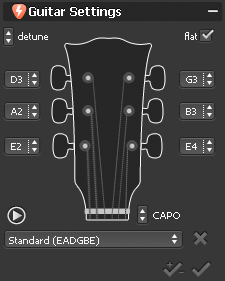
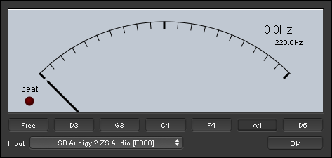

Mit Guitar Pro haben Sie mehrere Mõglichkeiten Ihr Instrument zu stimmen:über Tonvergleich mit dem Gehõr,über Anschluss des Instrumentes an den PC oderüber den Mikrophoneingang. Unabhängig von der Art der Stimmung, basiert sich Guitar Pro auf die Stimmung der aktiven Spur.
Um die Stimmung der aktiven Spur einzustellen, gehen Sie in Welt: Instrument.
Die MIDI-Stimmung ermõglicht es Ihnen, Ihre Gitarre nach Gehõr zu stimmen, Saite pro Saite.
Wählen Sie die Stimmung unter den in der Liste vorgeschlagenen, in den Feldern neben den Rädern.

Mit der Taste kõnnen Sie die leer-ausgewählte Saite hõren. Wenn keine Note ausgewählt ist, zählt er alle leeren Saiten auf. Das Kästchen B gibt Priorität zu B-Namen (Db anstelle von C# zum Beispiel) für die Stimmung. Im Feld KAPODASTER kõnnen Sie die Position des Kapodasters auswählen (0, wenn es kein Kapodaster gibt). Das X lõscht die Stimmung aus der Liste der Stimmungen. Mit dem Knopf kõnnen Sie die Stimmung auf die aktuellen Spur anwenden, und diese gleiche Spur mit der Stimmung transponieren. Der Knopf, der sich daneben befindet, wendet nur die Stimmung ohne zu transponieren an (was falsch klingen kõnnte).
Mit dem Digitalen Stimmgerät, kõnnen Sie Ihr Instrument stimmen, indem Sie es mit dem Eingang der Soundkarte Ihres PCs verbinden, oder den Gitarrenklang mit dem Mikrophone aufnehmen. Achten Sie darauf, dass der Eingang der Lautstärkeeinstellung Ihrer Soundkarte oder Ihres Mikrophons für den jeweiligen Eingang nicht auf Stumm geschaltet ist. Im Gegensatz zur MIDI-Stimmung, produziert das Digitale Stimmgerät keinen Ton.
Um das Digitale Stimmgerät aufzurufen, wählen Sie bitte das Menü Hilfsmittel > Digitales Stimmgerät aus.

Im Free-Modus erkennt der Tuner die gespielte Note und ihre Oktave und zeigt es rechts oben an; wenn die Nadel in der Mitte ist, ist die Note richtig. Sie kõnnen auch die Note der gewünschten Saite auswählen und dann die leere Saite auf Ihrer Gitarre spielen. Die Nadel muss senkrecht auf Grün platziert werden, so dass die Stimmung perfekt ist. Wenn die Nadel sich nicht bewegt, wenn Sie die Saite auf Ihrer Gitarre spielen, ändern Sie die Einstellungen Ihrer Soundkarte, um sicherzustellen, dass der Input weit offen steht.